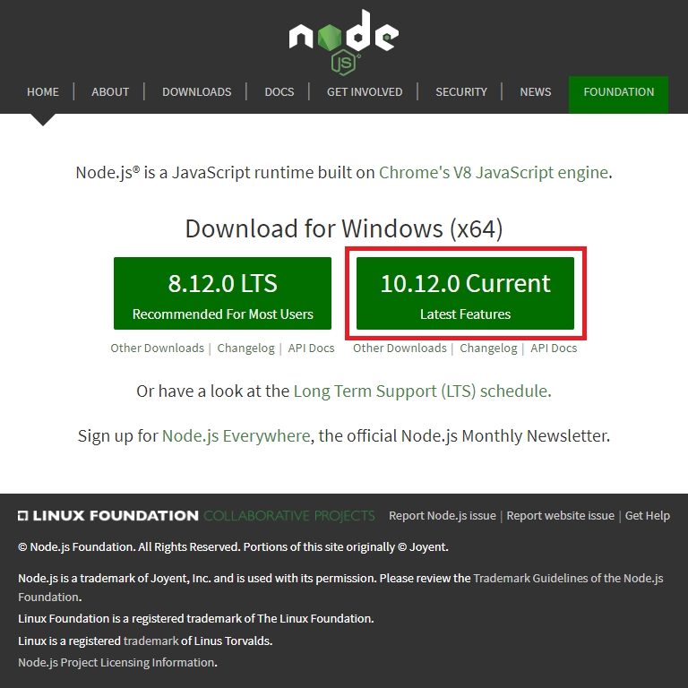

O mnie
Piotr Tarasiuk
Zaliczenie (?)
Przygotowanie środowiska
Instalacja Node.js
url: https://nodejs.org 
Czym jest Node.js?
Node.js
Jest środowiskiem uruchomieniowym zaprojektowanym do tworzenia wysoce skalowalnych aplikacji, napisanych w języku JavaScript poza kontekstem przeglądarki.
Node.js jak również interpreter JavaScript w naszej przeglądarce bazują na tym samym silniku zwanym V8 JavaScript Runtime Engine.
V8 JavaScript Runtime Engine
- otwarty kod źródłowy
- napisany w języku c++
- możliwość rozszerzenia silnika przez napisane modułu w c++
- kompiluje kod JavaScript do kodu maszynowego
Czym jest kod maszynowy?
Jest to zestaw rozkazów procesora w którym zapis programu wyrażony jest w postaci liczb binarnych stanowiących rozkazy oraz ich argumenty,
Kod maszynowy to postać programu komputerowego (zwana postacią wykonywalną lub binarną) przeznaczona do bezpośredniego lub prawie bezpośredniego wykonania przez procesor.
Na co pozwala nam Node.js?
Node.js pozwala nam na mainipulowanie systemem plików, stworzenie własnego serwera, łączenie się z bazami danych, obsługą wejścia/wyjścia, itp.
JavaScript po stronie przegladarki daje jedynie możliwość manipulowania danymi w naszym oknie(window).
Node.js vs JS w przeglądarce
global |
< = > | window |
process |
< = > | document |
Dlaczego Node.js jest tak popularny?
- Asynchroniczne wejście/wyjście (non-blocking I/O model)
- Node.js wykorzystuje programowanie zdarzeniowe (event driven)
- Node.js package ecosystem (npm)
Czym jest wejście/wyjście(I/O)?
Jest czymś co każda aplikacja wykonuje cały czas, np. operacje na bazie danych, wysyłanie i odbieranie żądań HTTP, operację na systemie plików.
Trzeba pamiętać, operacje I/O wymagają czasu!
Synchroniczne vs Asynchroniczne
Czy jest npmjs?
Node package manager, domyślny manager pakietów dla środowiska Node.js.
Npm jest aplikacją wiersza poleceń, za pomocą której można instalować aplikacje dostępne w
repozytorium Npm.
Podstawy Node.js
Require
Funkcja wbudowana w node.js, pozwala nam na wczytanie zewnętrznego pliku/modułu.
* import/export[^] w node.js
jest ciągle w fazie eksperymentalnej(--experimental-modules) i występuje jedynie w ES
module
const path = require('path');
module.exports
Pozwala na wyeksportowanie zmienncy/funkcji.
module.exports.abc = 'some string';
lub
module.exports = {
abc: 'some string'
};
Moduł (module)
- wbudowany (fs, os, itd...)
- własny
- zewnętrzny (lokalny/globalny)
Moduły wbudowane
Własne moduły
Zewnętrzne moduły
NPM
Call stack & event loop

Async Basics
callback
Funkcja która zostanie wykonana po określonej czynności
console.log('starting app');
setTimeout(function () {
console.log('my function callback');
}, 5000);
console.log('end app');
console.log('starting app');
setTimeout(function cb1() {
console.log('my function callback1');
}, 5000);
setTimeout(function cb2() {
console.log('my function callback2');
}, 0);
console.log('end app');
Callback
function getUser(id, callback) {
const user = {
id: id,
name: 'Jan'
};
// ...
callback(user);
}
getUser(12, function (userInfo) {
console.log(userInfo);
});
request
const request = require('request');
function getUser(id, callback) {
const url = 'https://jsonplaceholder.typicode.com/users/' + id;
request(url, function (error, response, body) {
callback(body);
});
}
getUser(5, function (userInfo) {
console.log(userInfo);
});
JSON
JavaScript Object Notation - lekki format wymiany danych komputerowych. JSON jest formatem tekstowym, bazującym na podzbiorze języka JavaScript.przykładowy JSON
{
"id": 12,
"name": "Jan",
"age": 35,
"fullName": "Jan Nowak"
}
JSON.parse
const userString = '{ "id": 12, "name": "Jan", "age": 35 }';
const user = JSON.parse(userString);
console.log(userString);
console.log(userString.id);
console.log(user);
console.log(user.id);
JSON.stringify
const user = {
id: 12,
name: 'Jan',
age: 25,
};
const userString = JSON.stringify(user);
console.log(user);
console.log(user.id);
console.log(userString);
console.log(userString.id);
Callback errors
const request = require('request');
const url = 'https://jsonplaceholder.typicode.com/users/123';
request(url, function (error, response, body) {
const result = JSON.parse(body);
console.log(result.address.geo.lat);
console.log(result.address.geo.lng);
});
const request = require('request');
const url = 'https://jsonplaceholder.typicode.com/users/123';
request(url, function (error, response, body) {
if (error) {
console.log('problem with api')
} else if (response.statusCode === 200) {
const result = JSON.parse(body);
console.log(result.address.geo.lat);
console.log(result.address.geo.lng);
} else {
console.log('user not found')
}
});
Debugging Node.js
const user = {
name: 'Jan',
};
user.age = 22;
user.name = 'Adam';
console.log(user);
REPL
REPL (ang. read-eval-print loop) - proste, interaktywne środowisko programowania. Praktycznie każdy język uruchamiany jako interpreter posiada REPL. Dzięki REPL użytkownik może wprowadzać polecenia, które zostaną wykonane a ich wynik wypisany na ekran.
debugger;
const user = {
name: 'Jan',
};
user.age = 22;
debugger;
user.name = 'Adam';
console.log(user);
Debugging in browser
Debugging in VSC
Arrow functions
function sum(a, b) {
return a + b;
}
=
const sum = (a, b) => a + b;
CALLBACK HELL!
The Pyramid of Doom
Promise
Klasa pozwalająca na tworzenie OBIEKTÓW reprezentujących wartość lub niepowodzenie operacji asynchronicznych.
Promise reprezentuje operację która jeszcze się nie zakończyła, ale oczekuje się jej w przyszłości.
Callbacks vs promises
Callbackjest funkcją,promisejest obiektemCallbackprzyjmuje parametry,promisejedynie zwraca wartośćCallbackobsługuje sukces oraz błąd,promisenie obsługuje nic a jedynie przekazuje dalej wartościCallbackmożemy wywołać wiele razy,promisejest wywoływany tylko raz
Promise states
- pending
- fulfilled
- rejected
Create promise
const myPromise = new Promise(/* executor */ (resolve, reject) => {
if (/* some logic */) {
resolve('all works fine');
} else {
reject('error');
}
});
.then(onFulfilled, onRejected)
myPromise.then(
result => { /* handle a succcessful result */ },
error => { /* handle an error */ }
);
.catch(onRejected)
myPromise.then(result => { /* ... */ })
.then(result => { /* ... */ })
.catch(error => { /* handle an error */ });
.finally()
myPromise.then(result => { /* handle a succcessful result */ })
.catch(error => { /* handle an error */ })
.finally(() => { /* do something at the end ... */ });
Promise.all([...])
Promise.all([promise1, promise2, ...]);
Promise.race([...])
Promise.race([promise1, promise2, ...]);
Promise.resolve(...)
Promise.resolve(/* some object/string/etc... */);
Promise.reject(...)
Promise.reject(/* some object/string/etc... */);
Error handling
try...catch
try {
// code...
} catch (error) {
// error handling
}
Zapamiętać!
try..catchdziała tylko w przypadku błędów w czasie wykonywaniatry..catchdziała synchronicznietry..catchzmienne zadeklarowane są lokalnereturn & finally-finallywykona się zawsze nawet jak w bloku wystąpireturn
finally
try {
// code...
} catch (error) {
// error handling
} finally {
// some code ...
}
Wbudowane błędy
Error- bazowa klasa błęduEvalError- błąd w funkcjieval()RangeError- wartość z poza zakresuReferenceError- bład referencji do obiektuSyntaxError- błąd składniowyTypeError- bład typuURIError- błąd w funkcjiencodeURI()
ERROR Object
name- nazwa błędumessage- wiadomość błędustack- stack w którym pojawił się błąd
EvalError
EvalError => SyntaxError
RangeError
const someNumber = 5;
someNumber.toPrecision(500); // this throw RangeError
ReferenceError
const a = 5;
const result = a + b; // this throw ReferenceError
SyntaxError
JSON.parse('crush JSON!'); // this throw SyntaxError
eval('const abc = "some broken string'); // this throw SyntaxError
TypeError
const someNumber = 5;
someNumber.toUpperCase(); // this throw TypeError
URIError
decodeURI('%%%'); // this throw URIError
Rzucanie wyjątkiem
throw <error>;
throw 123;
throw "some error string";
throw new Error('some error');
instanceof
const someError = new SyntaxError('abc');
console.log(someError instanceof ReferenceError); // false
console.log(someError instanceof SyntaxError); // true
console.log(someError instanceof Error); // true
Promise
async/await
Async
async function someFunc() {
return ...; // some function body
}
const arrowFunc = async () => ... // some function body
async function multi(a, b) {
return a + b;
}
multi(4, 5)
.then(result => {
console.log(result);
});
Await
const someVar = await <promise>
const someVar = await Promise.resolve('abc');
const axios = require('axios');
// ...
const user = await axios('https://.../users/1');
Zapamiętać!
asynctworzy nam funkcję opakowaną wPromiseawaitdziała jedynie wewnątrz funkcjiasyncawaitnie można stosować w funkcji synchronicznejawaitnie działa w kodzie najwyższego poziomu
Error handling in Promise
async function someFunc() {
await Promise.reject(new Error('error'));
}
=
async function someFunc() {
throw new Error('error');
}
HTTP Basics
HTTP
Hypertext Transfer Protocol - protokół przesyłania dokumentów hipertekstowych
- udostępnia znormalizowany sposób komunikowania się i wymiany danych między klientem a serwerem
HTTP ...
- określa formę żądań klienta dotyczących danych oraz formę odpowiedzi serwera na żądanie
- służy do przesyłania różnych typów danych, np. obrazów, wideo, dokumentów, itp.
- bazuje na protokole TCP
Zapamiętać!
HTTPjest typuconnectionlessHTTPdostarcza wszelkiego rodzaju daneHTTPjest typustateless
Wersje HTTP
| 1991 | 0.9 |
| 1996 | 1.0 |
| 1997 | 1.1 |
| 2015 | 2.0 |
TCP
Transmission Control Protocol - protokół sterowania transmisją
Połączeniowy, niezawodny strumieniowy protokół komunikacyjny stosowany do przesyłania danych pomiędzy procesami uruchomionymi na różnych maszynach.
HTTP messages
Request HTTP messageResponse HTTP message
GET /posts/1 HTTP/1.1
Content-Type: application/json
Accept: */*
Host: localhost:4800
HTTP/1.1 200
status: 200
Cache-Control: no-cache
Content-Type: application/json; charset=utf-8
Content-Length: 292
Date: Sat, 12 Jan 2019 07:11:48 GMT
{ ... user data }
HTTP methods
GET
Metoda GET służy do żądania danych z określonego zasobu.
Żądania używające metody GET powinny jedynie pobierać dane.
HEAD
Metoda HEAD pobiera informacje o zasobie, stosowane do sprawdzania dostępności zasobu.
POST
Metoda POST wysyła żądanie, aby serwer zaakceptował encję zawartą w żądaniu jako nowy obiekt zasobu sieciowego zidentyfikowanego przez wysłany URL.
PUT
Metoda PUT wysyła żądanie, aby obiekt był przechowywany pod dostarczonym identyfikatorem URL. Jeśli identyfikator URL odnosi się do już istniejącego zasobu, jest on modyfikowany, jeśli identyfikator URL nie wskazuje na istniejąc zasob to serwer może utworzyć zasób z tym identyfikatorem URL.
PATCH
Metoda PATCH stosuje częściowe modyfikacje zasobu.
DELETE
Metoda DELETE usuwa określony zasób.
OPTIONS
Metoda OPTIONS zwraca metody HTTP obsługiwane przez serwer dla określonego adresu URL.
HTTP Headers
HTTP Response Status Code
1XX- kody informacyjne2XX- kody powodzenia3XX- kody przekierowania4XX- kody błędu aplikacji klienta5XX- kody błędu serwera HTTP
Application Programming Interface
API
Zestaw reguł i ich opis, w jaki programy komputerowe komunikują się między sobą.
Zadanie interfejsu programowania aplikacji jest dostarczenie odpowiednich specyfikacji podprogramów, struktur danych, klas obiektów i wymaganych protokołów komunikacji.
Remote Procedure Call
RPC
RPC - czyli zdalne wywołanie procedur.
Podejście RPC ma wiele znaczeń oraz wiele form. W przypadku web, wywołanie RPC pozwala na manipulowanie danymi poprzez protokół HTTP.
RPC w rozumieniu web serwera: WYGOPIAO(What You GET Or POST Is An Operation).
Zapamiętać!
- Struktura komunikacji RPC nie jest z góry ustalona.
- Końcówka powinna zawierać nazwę procedury którą chcemy wywołać na zdalnym serwerze.
- Standard ten przyjmuje tylko 2 metody komunikacji
GETorazPOST.
Przykład
GET /getUsers?someType=abc
POST /saveNewUser
{
"name": "Jan",
"lastName": "Nowak"
}
Standardy bazujące na RPC
- JSON-RPC
- JSON-XML
- SOAP
Representational State Transfer
REST
REST - zmiana stanu poprzez reprezentacje
Standard określający zasady projektowania API. Bazuje na protokole HTTP.
Za pomocą interfejsu REST API możemy eksponować dane jako zasoby, którymi manipulujemy za pomocą odpowiednich metod protokołu HTTP.
REST ...
Metody jakie udostępnia nam protokół HTTP w łatwy sposób możemy przyporządkować do operacji CRUD(Create/Read/Update/Delete) na obiekcie.
C => POST
R => GET
U => PUT/PATCH
D => DELETE
Przykład
GET /users
GET /users/:id
POST /users
PUT /users/:id
DELETE /users/:id
Ogólne zasady REST
Uniform interface- Interfejs powinien zapewnić ustandaryzowaną komunikację pomiędzy klientem a serweremClient-server- Wyraźny podział na aplikację po stronie klienta i serweraStateless- czyli każde zapytanie powinno zawierać komplet informacji do poprawnego obsłużenia żądania
Ogólne zasady REST ...
Cacheable- API powinno wspierać cache’owanie danych w celu zwiększenia wydajnościLayered system- klient łączący się do serwera nie powinien wiedzieć co się dzieje po drugiej stronieCode on demand(*)– API przewiduje możliwość wysłania fragmentu kodu, który może być wykonany po stronie klienta
Resource
Resource – czyli zasób. Dowolna informacja, która posiada nazwę może być zasobem jeżeli:
- jest rzeczownikiem, np.: user, post, comment
- jest unikatowa i wskazuje na konkretną rzecz
- może być przedstawiona w formie danych
- posiada przynajmniej jeden adres URI, pod którym jest dostępny
Nazewnictwo
Zasoby powinny być tworzene w taki sposób, aby reprezentowały obiekt. Dzięki temu możliwe jest wykonanie wielu akcji na pojedyńczym zasobie.
GET /users
POST /users
DELETE /users/:id
GET /getUsers
POST /addUsers
POST /deleteUser?id=:id
Reprezentacja
- JSON
- YAML
- XML
- ...
GraphQL
GraphQL jest językiem zapytań dla interfejsów API i środowiskiem wykonawczym do wypełniania zapytań z istniejącymi danymi.
Zapewnia kompletny i zrozumiały opis danych w API.
Pozwala na pobranie wielu zasobów w jednym zapytaniu.
GraphQL ...
GraphQL daję możliwość zadawanie zapytań o to czego konkretnie dany klient potrzebuje, bez dodatkowych danych.
Łączy się do jednego adresu do którego wysyła odpowiednie zapytanie, które jest przetwarzane przez serwer.
GraphQL
HTTP Server
Wbudowany moduł HTTP
const http = require('http');
const server = http.createServer((req, res) => {
res.writeHead(200, {
'Content-Type': 'text/plain'
});
res.end('...');
});
server.listen(4500);
Web Frameworks
Express
Express jest to web framework, który zapewnia solidny zestaw funkcji dla aplikacji internetowych i mobilnych przy minimalnej i elastycznej strukturze.
hello world!
const express = require('express');
const app = express();
app.get('/', (req, res) => {
res.send('hello world!');
});
app.listen(4500, () => console.log('server started'));
Basic routing
Routing to określanie, w jaki sposób aplikacja odpowiada na żądanie klienta do określonego punktu końcowego i konkretnej metodzie żądania HTTP (GET, POST itd.).
Każda trasa może mieć jedną lub więcej funkcji obsługi, które są wykonywane po dopasowaniu ścieżki.
Routing[struktura]
app.METHOD(PATH, HANDLER)
app - instancja naszego serweraMETHOD - metoda żądania HTTP (małymi literami)PATH - ścieżka na serwerzeHANDLER - funkcja wykonywana po dopasowaniu ścieżkiRoute methods
app.get('/', (req, res) => {
res.send('hello world!');
});
app.post('/', (req, res) => {
res.send('Got a POST request');
});
app.all('/', (req, res) => {
res.send('Any of HTTP method');
});
Route paths
Ścieżki w połączeniu z metodą żądania, definiują punkty końcowe.
Ścieżki mogą przyjmować zwykły adres(string), wzór(string patterns) lub wyrażenie regularne(RegExp).
Znaki ?, +, * i () są podzbiorami ich odpowiedników w wyrażeniach regularnych. Łącznik (-) i kropka (.) Interpretowane są dosłownie według ścieżek opartych na łańcuchach.
Przykład zwykłej ścieżki
app.get('/users', (req, res) => {
// ...
});
app.post('/posts.txt', (req, res) => {
// ...
});
app.delete('/comments.json', (req, res) => {
// ...
});
Ścieżki bazujące na wzorze
// matches: user, users
app.get('/users?', (req, res) => {
// ...
});
// matches: users, userss, usersss, ...
app.post('/users+', (req, res) => {
// ...
});
// matches: users, usxxxers, usRANDOMers
app.delete('/us*ers', (req, res) => {
// ...
});
Wyrażenie regularne
// matches: file.txt, abc/kot.txt
app.get(/.*\.txt/, (req, res) => {
// ...
});
// matches: ala, alaMaKota ...
app.post(/^ala.*/, (req, res) => {
// ...
});
Route parameters
Parametry trasy to nazwane segmenty adresów URL, które służą do przechwytywania wartości określonych na ich pozycji w adresie URL.
Przechwycone wartości są zapełniane w obiekcie req.params, a nazwa parametru trasy jest określona w ścieżce jako odpowiadające im klucze.
Przykład
Path: /users/:userId/posts/:postId
URL: http://localhost:4500/users/12/posts/44
app.get('/users/:userId/posts/:postId', (req, res) => {
// req.params: { "userId": "12", "postId": "44" }
});
Przykład
Path: /getFile/:filename.:extension
URL: http://localhost:4500/getFile/somefile.txt
req.params: { "filename": "somefile", "extension": "txt" }
Przykład
Path: /getFile/:filename.:extension
URL: http://localhost:4500/getFile/somefile.txt
req.params: { "filename": "somefile", "extension": "txt" }
Route handlers
Route może posiadać wiele funkcji zwrotnych, które wykonują się sekwencyjnie aż zostanie wywołanie wysłania odpowiedzi do klienta. Warunkiem jest to iż funkcje pośrednie zamiast kończyć odpowiedź użyją funkcji callback next.
Procedury obsługi tras mogą mieć postać funkcji, szeregu funkcji lub kombinacji obu.
Single callback
app.get('/ala-ma-kota', (req, res) => {
// ...
});
Many callbacks
app.get(
'/ala-ma-kota',
(req, res, next) => { ...; next() },
(req, res, next) => { ...; next() },
(req, res) => { ... }
);
Combine callbacks
const callback1 = (req, res, next) => { ...; next() }
const callback2 = (req, res, next) => { ...; next() }
app.get(
'/ala-ma-kota',
[ callback1, callback2 ],
(req, res) => { ... }
);
Response methods
res.download()- wyślij plik do pobraniares.end()- zakończ żądanieres.json()- wyślij odpowiedź JSONres.redirect()- przekieruj żądanie
Response methods...
res.render()- wyrenderuj widokres.send()- wyślij odpowiedź różnych typówres.sendFile()- wyślij plik w postaci strumieniares.sendStatus()- ustaw i wyślij kod odpowiedzi jako treść
app.route()
app.route('/users')
.get((req, res) => {
// ...
})
.post((req, res) => {
// ...
})
.delete((req, res) => {
// ...
});
express.Router
Klasa express.Router służy do tworzenia modułowych, zbiorów procedur obsługi ścieżek.
Instancja routera to kompletne oprogramowanie wraz z systemem routingu. Określana również jako mini aplikacja.
Przykład
const express = require('express');
const router = express.Router();
router.use((req, res, next) => {
console.log('time: ', Date.now());
next();
});
router.get('/', (req, res) => {
res.send('hello world!');
});
module.exports = router;
Przykład ...
const express = require('express');
const dashboard = require('./dashboard');
const app = express();
app.use('/dashboard', dashboard);
app.listen(4500, () => console.log('server started'));
Middleware
MIDDLEWARE czyli oprogramowanie pośredniczące jest to rodzaj oprogramowania/funkcji umożliwiającej komunikację pomiędzy różnymi aplikacjami, usługami lub systemami.
REQUEST-->RESPONSE-->Middleware in Express
Middleware w Express pełni rolę pośrednią przed wykonaniem odpowiedniej instrukcji dla danej ścieżki.
W funkcji mamy dostęp do żądania i odpowiedzi HTTP oraz funkcji callback next, która odpowiada za wywołanie kolejnego middleware lub przejścia do odpowiedniej instrukcji dla danej ścieżki.
Funkcje middleware mogą wykonywać następujące zadania:
- wykonać dowolny kod
- wprowadzić zmiany w obiektach żądań i odpowiedzi
- zakończyć żadanie
- wywołac następne oprogramowanie pośrednie w stosie
Przykład
const express = require('express');
const app = express();
const customMiddleware = (req, res, next) => {
// some logic ...
next();
};
app.use(customMiddleware);
app.listen(4500, () => console.log('server started'));
Zapamiętać!
Jeżeli middleware nie kończy żądania/odpowiedzi, musi zostać wywyłana funkcja next(), aby przekazać sterowanie do następnej funkcji oprogramowania pośredniego.
W przeciwnym wypadku żądanie zostanie zawieszone.
Przykład
// ...
const timeMiddleware = (req, res, next) => {
req.requestTime = new Date();
next();
};
app.use(timeMiddleware);
app.get('/', (req, res) => {
res.send('request time: ' + req.requestTime);
});
// ...
Types of middleware
W Express możemy wykorzystać takie typy middleware jak:
Application-level middleware
Powiązanie oprogramowania warstwy pośredniej na poziomie aplikacji.
Ten rodzaj middleware będzie wykonywał się dla całej aplikacji lub dla wydzielonej grupy ścieżek.
Przykład
const express = require('express');
const app = express();
app.use((req, res, next) => {
console.log('current time', new Date());
next();
});
app.listen(4500, () => console.log('server started'));
Przykład (ścieżka)
const express = require('express');
const app = express();
app.use('/user', (req, res, next) => {
req.userTime = new Date();
next();
});
app.listen(4500, () => console.log('server started'));
Router-level middleware
Router-level middleware działa podobnie jak application-level middleware jedyna różnica jest taka iż ten rodzaj middleware działa w obrembie instancji express.Router().
Przykład
const express = require('express');
const router = express.Router()
router.use((req, res, next) => {
console.log('current time', new Date());
next();
});
// ...
Error-handling middleware
Error-handling middleware obsługuje błędy oprogramowania. Ten rodzaj middleware przyjmuje cztery argumenty.
Definicja tego rodzaju middleware wygląda podobnie jak w przypadku wcześniejszych typów.
Przykład
const express = require('express');
const app = express();
app.use((error, req, res, next) => {
console.error(error.message);
res.send(500, error.message);
});
// ...
Built-in middleware
Built-in middleware czyli wbudowane w webframework Express oprogramowanie pośrednie.
express.static-middlewareodpowiedzialny za udostępnianie statycznych zasobówexpress.json- parsowanie zawartości przychodzącego z żądania typuJSONexpress.urlencoded- parsowanie zawartości przychodzącego z żądania z formularza
Built-in middleware
Od wersji 4.x, Express udostępnia jedynie trzy wcześniej wymienione funkcje pośrednie.
Reszta middleware jest rozwijana w odzielnych modułach.
Third-party middleware
Third-party middleware czyli funkcje pośrednie stworzone przez innych poza zespołem twórców framework'a Express.
Przykład
const express = require('express');
const bodyParser = require('body-parser'):
const app = express();
app.use(bodyParser.json());
// ...
Template
Template
Express udostępnia mechanizm, który umożliwia korzystanie ze statycznych plików szablonów w aplikacji.
W środowisku wykonawczym silnik szablonów zastępuje zmienne w pliku statycznym, rzeczywistymi wartościami i przekształca szablon w plik HTML wysyłany do użytkownika.
template engines
Niektóre popularne silniki szablonów współpracują z Express'em(np. JADE/Pug, Mustache, EJS).
Express domyślnie używa JADE/Pug jako silnik szablonów.
Render
- ustawić ścieżkę do katalogu gdzie będą znajdować sie szablony, np:
app.set('views', './templates'); - ustawić odpowiedni silinik szablonów, np:
app.set('view engine', 'pug')oraz pobrać odpowiednią paczkę znpm
Przykład
const express = require('express');
const app = express();
app.set('view engine', 'pug')
app.get('/', function (req, res) {
const scope = { title: 'some title', header: 'heloo!' };
res.render('index', scope);
});
// ...
PUG template
html
head
title= title
body
h1= header
Express Error Handling
Error handling
Obsługa błędów odnosi się do sposobu, w jaki framework Express przechwytuje i przetwarza błędy, które występują synchronicznie jaki i asynchronicznie.
Express sam w sobie zawiera domyślną procedurę obsługi błędów, więc jeżeli nie ma takiej potrzeby to nie trzeba jej pisać samodzielnie.
Catching Errors
Ważne jest, aby program Express przechwytywał wszystkie błędy występujące podczas uruchamiania programów do obsługi tras jak i middleware.
Błędy występujące w kodzie synchronicznym wewnątrz procedur obsługi tras i oprogramowania pośredniego nie wymagają dodatkowej pracy. Jeśli kod synchroniczny zgłasza błąd, Express przechwytuje go i przetwarza.
Przykład
const express = require('express');
const app = express();
app.get('/', function (req, res) {
throw new Error('some dumb error');
});
// ...
Catching Errors
W przypadku błędów zwracanych przez funkcje asynchroniczne wywoływane przez procedury obsługi i oprogramowanie pośrednie, należy przekazać je do funkcji next(), w której to Express je przechwyci i przetworzy.
Przykład
const express = require('express');
const app = express();
app.get('/', function (req, res) {
setTimeout(() => {
const error = new Error('some dumb error');
next(error);
}, 5000);
});
// ...
Default error handler
Express dostarcza wbudowaną obsługę błędów, która dba o wszelkie błędy, które mogą wystąpić w aplikacji.
Ta domyślna funkcja obsługi oprogramowania do obsługi błędów jest dodawana na KOŃCU stosu funkcji oprogramowania pośredniego.
Default error handler...
Jeśli przekażemy błąd do funkcji next() i nie obsłużymy go w niestandardowej procedurze obsługi błędów, zostanie ona obsłużona przez wbudowany mechanizm obsługi błędów.
Error handlers
Konstrukcja middleware do obsługi błędów przyjmuje cztery argumenty, nie tak jak w przypadku zwykłych funkcji pośrednich. (err, req, res, next)
Middleware zawiązane z obsługą błędów muszą być użyte po dodaniu innych funkcji pośredniczących jak i obsługi ścieżek.
Przykład
// ...
app.use(bodyParser.json());
app.use(cookieParser);
app.get('/', ...);
/// ...
app.use((error, req, res, next) => {
// ...
});
// ...
DATABASE
DATABASE
DATABASE(baza danych) – uporządkowany zbiór danych zapisany zgodnie z określonymi regułami.
Definicja obejmuje dane cyfrowe gromadzone zgodnie z zasadami przyjętymi dla danego programu komputerowego specjalizowanego do gromadzenia i przetwarzania danych.
DATABASE...
Program taki nazywany jest systemem zarządzania bazami danych(DBMS, database management system), składający się ze zintegrowanego zestawu oprogramowania komputerowego, które pozwala użytkownikom na interakcję z jedną lub większą liczbą baz danych i zapewnia dostęp do wszystkich danych zawartych w bazie danych
Działanie baz danych
Sposób organizacji danych w bazach danych jest różny.
Wiele typów baz danych organizuje dane w formie tabel zawierających rekordy podzielone na pola, w których są przechowywane informacje poszczególnych kategorii.
Rodzaje baz danych
Bazy danych można podzielić według struktur organizacji danych, których używają:
- relacyjne
- obiektowe
- relacyjno - obiektowe
- strumieniowe
- nierelacyjne (NoSQL)
Bazy kartotekowe
W bazach kartotekowych każda tablica danych jest samodzielnym dokumentem. Jedna tablica nie może współpracować z innymi. Przykładami tego typu bazy danych mogą być: książki telefoniczne, kucharskie. Są one stosowane w jednym, wybranym wcześniej celu.
Bazy hierarchiczne
Są to bazy danych zawierające powiązane ze sobą dane, ułożone w strukturę o kształcie drzewa z jednym punktem początkowym i wieloma rozgałęzieniami. Hierarchiczny model bazy danych cechuje skomplikowana struktura i trudności z tworzeniem określonego typu powiązań pomiędzy danymi.
Bazy relacyjne
W przeciwieństwie do baz kartotekowych, w bazach relacyjnych wiele tablic danych może ze sobą współpracować.
Bazy te posiadają wewnętrzne języki programowania, wykorzystujące zwykłe SQL do operowania na danych, dzięki czemu tworzone są zaawansowane funkcje obsługi danych.
Bazy relacyjne...
Relacyjne bazy danych oparte są na kilku podstawowych zasadach:
- Wszystkie wartości są oparte na prostych typach danych
- Wszystkie dane w bazie relacyjnej przedstawiane są w formie tabel. Tabela składa się z wierszy zwanych rekordami i kolumn zwanych polami. Każda kolumna posiada unikalną w obrębie tabeli nazwę
Bazy relacyjne...
- Po wprowadzeniu danych do bazy, możliwe jest porównywanie wartości z różnych kolumn, również z różnych tabel, scalanie wierszy, gdy pochodzące z nich wartości są tego samego typu.
- Każda tabela musi posiadać jedną kolumnę pozwalającą jednoznacznie zidentyfikować i odnaleźć konkretny wiersz. Kolumnę te określa się mianem 'klucza podstawowego tabeli'
Bazy obiektowe
W bazach obiektowych dane są przechowywane za pomocą struktur obiektowych, będących zdefiniowanych jako klasy. Nie są one zdefiniowane żadnym oficjalnym standardem.
Bazy obiektowe...
Cechą charakterystyczną obiektowych baz danych jest to, że przechowują obiekty o dowolnych strukturach wraz z przywiązanymi do nich metodami (procedurami).
Dzięki takiemu rozwiązaniu bazy takie mają znaczną przewagę nad innymi rodzajami baz kiedy zachodzi konieczność przechowywania bardzo złożonych struktur.
Bazy relacyjno-obiektowe
Bazy relacyjno-obiektowe pozwalają na manipulowanie danymi jako zestawem obiektów, posiadają jednak bazę relacyjną jako wewnętrzny mechanizm przechowywania danych.
Bazy strumieniowe
Strumieniowe bazy danych są to bazy, w których dane są przedstawione w postaci strumieni danych. System zarządzania taką bazą nazywany jest DSMS (ang. Data Stream Managament System) czyli strumieniowym systemem zarządzania danymi.
Bazy strumieniowe...
W modelu strumieni danych zakłada się, że niektóre lub wszystkie napływające do systemu dane nie są dostępne w dowolnej chwili. Możliwy czas, w jakim można je zarejestrować jest skończony. Dane te pojawiają się w źródle danych i przyjmują postać strumienia danych.
Bazy nierelacyjne
Pod pojęciem bazy nierelacyjnej (NoSQL database) najczęściej rozumie się przechowywanie danych w formie listy par obiektów klucz-wartość, w których nie występują powiązania relacyjne między przechowywanymi obiektami.
W bazie NoSQL najczęściej nie ma wymagania aby obiekty były jednorodne pod względem struktury.
SQL vs NoSQL
SQL
SQL (Structured Query Language) – strukturalny język zapytań używany do tworzenia, modyfikowania baz danych oraz do umieszczania i pobierania danych z baz danych.
Język SQL jest językiem deklaratywnym. Decyzję o sposobie przechowywania i pobrania danych pozostawia się systemowi zarządzania bazą danych (DBMS).
Przykład SQL
SELECT * FROM EMPLOYEES
WHERE SALARY > 2000
ORDER BY SALARY DESC
NoSQL
NoSQL (nierelacyjna baza danych SQL) – baza danych zapewniająca mechanizm do przechowywania i wyszukiwania danych modelowanych w inny sposób niż relacje tabelaryczne używane w relacjach baz danych SQL.
NoSQL stworzony został z potrzeby obsługiwania większych wolumenów danych, która wymusiła przejście na model budowania platform na klastrach mniej wydajnych serwerów.
NoSQL...
Struktury danych używane przez NoSQL (np. klucz–wartość, graf, dokument, szerokokolumnowe) różnią się od tych używanych domyślnie w relacyjnych bazach danych, dzięki czemu niektóre operacje NoSQL są szybsze.
Dlaczego NoSQL?
MongoDB
MongoDB – otwarty, nierelacyjny system zarządzania bazą danych. Charakteryzuje się dużą skalowalnością, wydajnością oraz brakiem ściśle zdefiniowanej struktury obsługiwanych baz danych.
Zamiast tego dane składowane są jako dokumenty w stylu JSON, co umożliwia aplikacjom bardziej naturalne ich przetwarzanie, przy zachowaniu możliwości tworzenia hierarchii oraz indeksowania.
MongoDB console
MongoDB compass
MongoDB w NodeJS
const { MongoClient } = require('mongodb');
(async () => {
const dbAddress = 'mongodb://127.0.0.1:27017/';
const dbName = 'users';
const mongoOptions = { useNewUrlParser : true };
const client = await MongoClient.connect(dbAddress, mongoOptions);
const db = client.db(dbName);
// ...
})();